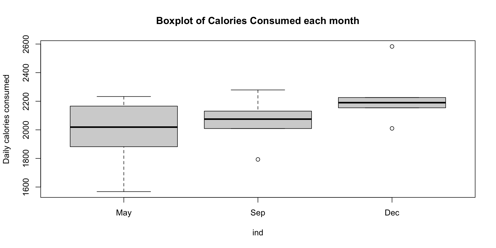

# Enter datay <-c(70, 65, 90, 95, 110, 115, 120, 140, 155, 150)x2 <-c(80, 100, 120, 140, 160, 180, 200, 220, 240, 260)x3 <-c(810, 1009, 1273, 1425, 1633, 1876, 2052, 2201, 2435, 2686)# Fit modelmodel <-lm(y ~ x2 + x3)# We want to display only part of summary# First capture the output into a vectortemp <-capture.output(summary(model))# Then print only the lines of interestcat(paste(temp[9:20], collapse ="\n"))
Coefficients:
Estimate Std. Error t value Pr(>|t|)
(Intercept) 24.77473 6.75250 3.669 0.00798 **
x2 0.94154 0.82290 1.144 0.29016
x3 -0.04243 0.08066 -0.526 0.61509
---
Signif. codes: 0 '***' 0.001 '**' 0.01 '*' 0.05 '.' 0.1 ' ' 1
Residual standard error: 6.808 on 7 degrees of freedom
Multiple R-squared: 0.9635, Adjusted R-squared: 0.9531
F-statistic: 92.4 on 2 and 7 DF, p-value: 9.286e-06
Three basic statistics
R^2 coefficient
t-statistics and related p-values
F-statistic and related p-value
Coefficients:
Estimate Std. Error t value Pr(>|t|)
(Intercept) 24.77473 6.75250 3.669 0.00798 **
x2 0.94154 0.82290 1.144 0.29016
x3 -0.04243 0.08066 -0.526 0.61509
---
Signif. codes: 0 '***' 0.001 '**' 0.01 '*' 0.05 '.' 0.1 ' ' 1
Residual standard error: 6.808 on 7 degrees of freedom
Multiple R-squared: 0.9635, Adjusted R-squared: 0.9531
F-statistic: 92.4 on 2 and 7 DF, p-value: 9.286e-06
R^2 = 0.9635
Model explains a substantial amount of the variation (96.35%) in the data
Coefficients:
Estimate Std. Error t value Pr(>|t|)
(Intercept) 24.77473 6.75250 3.669 0.00798 **
x2 0.94154 0.82290 1.144 0.29016
x3 -0.04243 0.08066 -0.526 0.61509
---
Signif. codes: 0 '***' 0.001 '**' 0.01 '*' 0.05 '.' 0.1 ' ' 1
Residual standard error: 6.808 on 7 degrees of freedom
Multiple R-squared: 0.9635, Adjusted R-squared: 0.9531
F-statistic: 92.4 on 2 and 7 DF, p-value: 9.286e-06
F-statistic is F = 92.4
Corresponding p-value is p = 9.286 \times 10^{-6} <0.05
Evidence that at least one between Income and Wealth affect Expenditure
Coefficients:
Estimate Std. Error t value Pr(>|t|)
(Intercept) 24.77473 6.75250 3.669 0.00798 **
x2 0.94154 0.82290 1.144 0.29016
x3 -0.04243 0.08066 -0.526 0.61509
---
Signif. codes: 0 '***' 0.001 '**' 0.01 '*' 0.05 '.' 0.1 ' ' 1
Residual standard error: 6.808 on 7 degrees of freedom
Multiple R-squared: 0.9635, Adjusted R-squared: 0.9531
F-statistic: 92.4 on 2 and 7 DF, p-value: 9.286e-06
t-statistics:
t-statistics for Income is t = 1.144; Corresponding p-value is p = 0.29016
t-statistic for Wealth is t = -0.526; Corresponding p-value is p = 0.61509
Both p-values are p > 0.05 \implies regression parameters are \beta_2 = \beta_3 = 0
Therefore, neither Income nor Wealth affect Expenditure
The output looks strange
Main red flag for Multicollinearity:
High R^2 value coupled with low t-values (corresponding to high p-values)
There are many contradictions:
High R^2 value suggests model is really good
However, low t-values imply neither Income nor Wealth affect Expenditure
F-statistic is high \implies at least one between Income or Wealth affect Expenditure
The Wealth estimator has the wrong sign (\hat \beta_3 < 0). This makes no sense:
it is likely that Expenditure will increase as Wealth increases
therefore, we would expect \, \hat \beta_3 > 0
Multicollinearity is definitely present!
Further confirmation
Method 1: Computing the correlation:
Compute correlation of X_2 and X_3
cor(x2, x3)
[1] 0.9989624
Correlation is almost 1: Variables X_2 and X_3 are very highly correlated
This once again confirms Multicollinearity is present
Conclusion: The variables Income and Wealth are highly correlated
Impossible to isolate individual impact of either Income or Wealth upon Expenditure
Method 2: Klein’s rule of thumb: Multicollinearity will be a serious problem if:
The R^2 obtained from regressing predictor variables X is greater than the overall R^2 obtained by regressing Y against all the X variables
In the Expenditure vs Income and Wealth dataset we have:
Regressing Y against X_2 and X_3 gives R^2=0.9635
Regressing X_2 against X_3 gives R^2 = 0.9979
# Fit modelklein <-lm(x2 ~ x3)# Read R^2 in summarysummary(klein)
Klein’s rule of thumb suggests that Multicollinearity will be a serious problem
Addressing multicollinearity
The variables Income and Wealth are highly correlated
Intuitively, we expect both Income and Wealth to affect Expenditure
Solution can be to drop either Income or Wealth variables
We can then fit 2 separate models
# Fit expenditure as function of incomemodel.1<-lm(y ~ x2)# Fit expenditure as function of wealthmodel.2<-lm(y ~ x3)summary(model.1)summary(model.2)
Expenditure Vs Income
Coefficients:
Estimate Std. Error t value Pr(>|t|)
(Intercept) 24.45455 6.41382 3.813 0.00514 **
x2 0.50909 0.03574 14.243 5.75e-07 ***
---
Signif. codes: 0 '***' 0.001 '**' 0.01 '*' 0.05 '.' 0.1 ' ' 1
Residual standard error: 6.493 on 8 degrees of freedom
Multiple R-squared: 0.9621, Adjusted R-squared: 0.9573
F-statistic: 202.9 on 1 and 8 DF, p-value: 5.753e-07
R^ 2 = 0.9621 which is quite high
p-value for \beta_2 is p = 9.8 \times 10^{-7} < 0.05 \quad \implies \quadIncome variable is significant
Estimate is \hat \beta_2 = 0.50909 > 0
Strong evidence that Expenditure increases as Income increases
Expenditure Vs Wealth
Coefficients:
Estimate Std. Error t value Pr(>|t|)
(Intercept) 24.411045 6.874097 3.551 0.0075 **
x3 0.049764 0.003744 13.292 9.8e-07 ***
---
Signif. codes: 0 '***' 0.001 '**' 0.01 '*' 0.05 '.' 0.1 ' ' 1
Residual standard error: 6.938 on 8 degrees of freedom
Multiple R-squared: 0.9567, Adjusted R-squared: 0.9513
F-statistic: 176.7 on 1 and 8 DF, p-value: 9.802e-07
R^ 2 = 0.9567 which is quite high
p-value for \beta_2 is p = 9.8 \times 10^{-7} < 0.05 \quad \implies \quadWealth variable is significant
Estimate is \hat \beta_2 = 0.049764 > 0
Strong evidence that Expenditure increases as Wealth increases
We see that the following pairs are highly correlated (correlation \, > 0.9)
(X_2, X_3)\,, \quad
(X_2, X_6)\,, \quad
(X_2, X_7)\,, \quad
(X_3, X_6)\,, \quad
(X_3, X_7)\,, \quad
(X_6, X_7)
Applying Stepwise regression
Goal: Want to find best variables which, at the same time
Explain Employment variable Y
Reduce Multicollinearity
Method: We use Stepwise regression
Start by by fitting the null and full regression models
# Fit the null modelnull.model <-lm(y ~1)# Fit the full modelfull.model <-lm(y ~ x2 + x3 + x4 + x5 + x6 + x7)
Perform Stepwise regression by
Forward selection
Backward selection
Stepwise selection
# Forward selectionbest.model.1<-step(null.model, direction ="forward", scope =formula(full.model))# Backward selectionbest.model.2<-step(full.model, direction ="backward")# Stepwise selectionbest.model.3<-step(null.model, direction ="both",scope =formula(full.model))
Models obtained by Stepwise regression are stored in
Interpretation: Reject H_0 when either
p < 0.05 \qquad \text{ or } \qquad F \in \,\,\text{Rejection Region}
Alternative
Rejection Region
F^*
p-value
\exists \,\, i \neq j s.t. \mu_i \neq \mu_j
F > F^*
F_{k-1,n-k}(0.05)
P(F_{k-1,n-k} > F)
Worked Example: Calorie Consumption
Consider 15 subjects split at random into 3 groups
Each group is assigned a month
For each group we record the number of calories consumed on a randomly chosen day
Assume that calories consumed are normally distributed with common variance, but maybe different means
May
2166
1568
2233
1882
2019
Sep
2279
2075
2131
2009
1793
Dec
2226
2154
2583
2010
2190
Question: Is there a difference in calories consumed each month?
Boxplot of the data
To visually compare sample means for each population
# Enter the datamay <-c(2166, 1568, 2233, 1882, 2019)sep <-c(2279, 2075, 2131, 2009, 1793)dec <-c(2226, 2154, 2583, 2010, 2190)# Combine vectors into a list and label themdata <-list(May = may, September = sep, December = dec)# Create the boxplotboxplot(data,main ="Boxplot of Calories Consumed each month",ylab ="Daily calories consumed")
It seems that consumption is, on average, higher in colder months
We suspect population means are different: need one-way ANOVA F-test
Performing the one-way ANOVA F-test
We first compute sample means and grand mean
\overline{x}_i = \frac{1}{n_i} \sum_{j=1}^{n_i} x_{ij} \,, \qquad
\overline{x} = \frac{1}{k} \sum_{i=1}^k \overline{x}_i
# Compute means for each samplemay.bar <-mean(may)sep.bar <-mean(sep)dec.bar <-mean(dec)# Compute grand meanx.bar <-mean(c(may, sep, dec))
We have conducted the one-way ANOVA F-test by hand
This is cumbersome with large datasets with many populations
The quick way in R is to use the command aov (analysis of variance)
Method
Place all the samples into one long vector values
Create a vector with corresponding group labels ind
Turn ind into a factor
Combine values and ind into a dataframe d
Therefore, dataframe d contains:
First Column: values for each sample
Second Column: ind, indicating the group the corresponding sample is from
The ANOVA F-test is performed with
\text{aov(values } \sim \text{ ind, data = d)}
values ~ ind is the formula coupling values to the corresponding group
Example 1: Calorie Consumption
Recall: we have 15 subjects split at random into 3 groups
Each group is assigned a month
For each group we record the number of calories consumed on a randomly chosen day
Assume that calories consumed are normally distributed with common variance, but maybe different means
May
2166
1568
2233
1882
2019
Sep
2279
2075
2131
2009
1793
Dec
2226
2154
2583
2010
2190
Question: Is there a difference in calories consumed each month?
Preparing the data
# Enter the datamay <-c(2166, 1568, 2233, 1882, 2019)sep <-c(2279, 2075, 2131, 2009, 1793)dec <-c(2226, 2154, 2583, 2010, 2190)# Combine values into one long vectorvalues <-c(may, sep, dec)# Create vector of group labelsind <-rep(c("May", "Sep", "Dec"), each =5)# Turn vector of group labels into a factor# Note that we order the levelsind <-factor(ind, levels =c("May", "Sep", "Dec"))# Combine values and labels into a data framed <-data.frame(values, ind)# Print d for visualizationprint(d)
values ind
1 2166 May
2 1568 May
3 2233 May
4 1882 May
5 2019 May
6 2279 Sep
7 2075 Sep
8 2131 Sep
9 2009 Sep
10 1793 Sep
11 2226 Dec
12 2154 Dec
13 2583 Dec
14 2010 Dec
15 2190 Dec
Boxplot of the data
Previously, we constructed a boxplot by placing the data into a list
Now that we have a dataframe, the commands are much simpler:
Pass the dataframe d to boxplot
Pass the formula values ~ ind
boxplot(values ~ ind, data = d,main ="Boxplot of Calories Consumed each month",ylab ="Daily calories consumed")

Already observed: Consumption is, on average, higher in colder months
We suspect population means are different: need one-way ANOVA F-test
We have already conducted the test by hand. We now use aov
Calling aov
Data is stored in dataframe d
1st column values contains calories consumed
2nd column ind contains month labels
# Perform ANOVA F-test for difference in meansmodel <-aov(values ~ ind, data = d)# Print summarysummary(model)
Df Sum Sq Mean Sq F value Pr(>F)
ind 2 174664 87332 1.786 0.209
Residuals 12 586720 48893
As obtained with hand calculation, the p-value is p = 0.209
p > 0.05 \implies Do not reject H_0: Population means are similar
Example 2: ANOVA vs Two-sample t-test
When only 2 groups are present, they coincide:
ANOVA F-test for difference in means
Two-sample t-test for difference in means
(with assumption of equal variance)
Example: Let us compare calories data only for the months of May and Dec
May
2166
1568
2233
1882
2019
Dec
2226
2154
2583
2010
2190
First, let us conduct a two-sample t-test for difference in means
# Enter the datamay <-c(2166, 1568, 2233, 1882, 2019)dec <-c(2226, 2154, 2583, 2010, 2190)# Two-sample t-test for difference in meanst.test(may, dec, var.equal = T)$p.value
[1] 0.1259272
The p-value is p \approx 0.126
Since p > 0.05, we do not reject H_0
In particular, we conclude that populations means are similar:
Calories consumed in May and December do not differ on average
Let us now compare the two population means with the ANOVA F-test
# Combine values into one long vectorvalues <-c(may, dec)# Create factor of group labelsind <-factor(rep(c("May", "Dec"), each =5))# Combine values and labels into a data framed <-data.frame(values, ind)# Perform ANOVA F-testmodel <-aov(values ~ ind, data = d)# Print summarysummary(model)
Df Sum Sq Mean Sq F value Pr(>F)
ind 1 167702 167702 2.919 0.126
Residuals 8 459636 57455
The p-values p \approx 0.126 coincide! ANOVA F-test and Two-sample t-test are equivalent
This fact is discussed in details in the next 2 Parts
Part 7: Dummy variable Regression
Explaining the terminology
Dummy variable: Variables X which are qualitative in nature
ANOVA: refers to situations where regression models contain
only dummy variables X
This generalizes the ANOVA F-test seen earlier
ANCOVA: refers to situations where regression models contain a combination of
dummy variables and quantitative (the usual) variables
Dummy variables
Dummy variable:
A variable X which is qualitative in nature
Often called cathegorical variables
Regression models can include dummy variables
Qualitatitve binary variables can be represented by X with
X = 1 \, if effect present
X = 0 \, if effect not present
Examples of binary quantitative variables are
On / Off
Yes / No
Sample is from Population A / B
Dummy variables
Dummy variables can also take several values
These values are often called levels
Such variables are represented by X taking discrete values
Examples of dummy variables with several levels
Month: Jan, Feb, Mar, …
Season: Summer, Autumn, Winter, Spring
Priority: Low, Medium, High
Quarterly sales data: Q1, Q2, Q3, Q4
UK regions: East Midlands, London Essex, North East/Yorkshire, …
Since \beta_2 = \mu_2 - \mu_1, the above hypothesis is equivalent to
H_0 \colon \mu_1 = \mu_2 \,, \qquad H_1 \colon \mu_1 \neq \mu_2
Hypotheses for F-test of Overall Significance and two-sample t-test are equivalent
In the Homework, we have also proven that the ML estimators for the model
Y_i = \beta_1 + \beta_2 \, \mathbf{1}_{2} (i) + \varepsilon_i
satisfy
\hat{\beta}_1 = \overline{a} \,, \qquad
\hat{\beta}_2 = \overline{b} - \overline{a}
With this information, it is easy to check that they are equivalent
F-statistic for Overall Significance
t-statistic for two-sample t-test
F-test of Overall Significance and two-sample t-test are equivalent
In particular, the (fitted) dummy variable regression model is
\begin{align*}
{\rm I\kern-.3em E}[Y| \text{Sample is from population 1}] & = \overline{a} \\[10pt]
{\rm I\kern-.3em E}[Y| \text{Sample is from population 2}] & = \overline{b}
\end{align*}
ANOVA F-test and Regression
Now, consider the general ANOVA case
Assume given k independent populations with normal distribution N(\mu_i,\sigma^2)
Example: In Fridge sales example we have k = 4 populations (the 4 quarters)
The ANOVA hypothesis for difference in populations means is
\begin{align*}
H_0 & \colon \mu_1 = \mu_2 = \ldots = \mu_k \\
H_1 & \colon \mu_i \neq \mu_j \text{ for at least one pair i and j}
\end{align*}
Goal: Show the ANOVA F-test for above hypothesis can be obtained with regression
We want to introduce dummy variable regression model which models ANOVA
To each population, associate a dummy variable
\mathbf{1}_{i}(j) = \begin{cases}
1 & \text{ if j-th sample belongs to population i} \\
0 & \text{ otherwise} \\
\end{cases}
Denote by x_{i1}, \ldots, x_{in_i} the iid sample of size n_{i} from population i
Concatenate these samples into a long vector (length n_1 + \ldots + n_2)
y = (\underbrace{x_{11}, \ldots, x_{1n_1}}_{\text{population 1}}, \, \underbrace{x_{21}, \ldots, x_{2n_2}}_{\text{population 2}} , \, \ldots, \, \underbrace{x_{k1}, \ldots, x_{kn_k}}_{\text{population k}})
In particular, the regression function is
{\rm I\kern-.3em E}[Y | \mathbf{1}_{2} = x_2 , \, \ldots, \, \mathbf{1}_{k} = x_k ] = \beta_1 + \beta_2 \, x_2 + \ldots + \beta_k \, x_k
By construction, we have that
Y | \text{sample belongs to population i} \ \sim \ N(\mu_i , \sigma^2)
A sample point belongs to population 1 if and only if
\mathbf{1}_{2} = \mathbf{1}_{3} = \ldots = \mathbf{1}_{k} = 0
Hence, we can compute the conditional expectation
{\rm I\kern-.3em E}[ Y | \mathbf{1}_{2} = 0 , \, \ldots, \, \mathbf{1}_{k} = 0] =
{\rm I\kern-.3em E}[Y | \text{sample belongs to population 1}] = \mu_1
On the other hand, by definition of regression function, we get
{\rm I\kern-.3em E}[ Y | \mathbf{1}_{2} = 0 , \, \ldots, \, \mathbf{1}_{k} = 0] = \beta_1 + \beta_2 \cdot 0 + \ldots + \beta_k \cdot 0 = \beta_1 \quad \implies \quad \mu_1 = \beta_1
Similarly, a sample point belongs to population 2 if and only if
\mathbf{1}_{2} = 1 \quad \text{and} \quad \mathbf{1}_{1} = \mathbf{1}_{3} = \ldots = \mathbf{1}_{k} = 0
Hence, we can compute the conditional expectation
{\rm I\kern-.3em E}[ Y | \mathbf{1}_{2} = 1 , \, \mathbf{1}_{3} = 0, \, \ldots, \, \mathbf{1}_{k} = 0] =
{\rm I\kern-.3em E}[Y | \text{sample belongs to population } A_2] = \mu_2
On the other hand, by definition of regression function, we get
{\rm I\kern-.3em E}[ Y | \mathbf{1}_{2} = 1 , \, \mathbf{1}_{3} = 0, \, \ldots, \, \mathbf{1}_{k} = 0] = \beta_1 + \beta_2 \cdot 1 + \ldots + \beta_k \cdot 0 = \beta_1 + \beta_2
Therefore, we conclude that
\mu_2 = \beta_1 + \beta_2
Arguing in a similar way, we can show that
\mu_i = \beta_1 + \beta_i \,, \quad \forall \, i \geq 2
Recall that the regression model is
Y_i = \beta_1 + \beta_2 \, \mathbf{1}_{2} (i) + \ldots + \beta_k \, \mathbf{1}_{k} (i) + \varepsilon_i
The hypothesis for F-test for Overall Significance for above model is
H_0 \colon \beta_2 = \beta_3 = \ldots = \beta_k = 0 \,, \qquad
H_1 \colon \exists \, i \in \{2, \ldots, k\} \text{ s.t. } \beta_i \neq 0
Since \beta_i = \mu_i - \mu_1 for all i \geq 2, the above is equivalent to
H_0 \colon \mu_1 = \mu_2 = \ldots = \mu_k \, \qquad
H_1 \colon \mu_i \neq \mu_j \text{ for at least one pair } i \neq j
Hypotheses for F-test of Overall Significance and ANOVA F-test are equivalent
Denote by \overline{x}_i the mean of the sample x_{i1}, \ldots, x_{i n_i} from population i
It is easy to prove that the ML estimators for the model
Y_i = \beta_1 + \beta_2 \, \mathbf{1}_{2} (i) + \ldots + \beta_k \, \mathbf{1}_{k} (i) + \varepsilon_i
satisfy
\hat{\beta}_1 = \overline{x}_1 \,, \qquad
\hat{\beta}_i = \overline{x}_i - \overline{x}_1 \, \quad \forall \, i \geq 2
With this information, it is easy to check that they are equivalent
F-statistic for Overall Significance
F-statistic for ANOVA F-test
F-test of Overall Significance and ANOVA F-test are equivalent
In particular, the (fitted) dummy variable regression model is
These estimates coincide with sample means in each quarter
(As already noted, this is true for any dummy variable regression model)
# For example, compute average fridge sales in Q3fridge.sales.q3 <- d$fridge.sales[ d$quarter ==3 ]mean(fridge.sales.q3)
[1] 1569.75
ANOVA F-test from regression
ANOVA F-test is equivalend to F-test for Overall Significance of model
Y = \beta_1 + \beta_2 \mathbf{1}_2 + \beta_3 \mathbf{1}_3 + \beta_4 \mathbf{1}_4 + \varepsilon
Therefore, look at F-test line in the summary of model
\texttt{lm(fridge} \, \sim \, \texttt{q2 + q3 + q4)}
F-statistic: 10.6 on 3 and 28 DF, p-value: 7.908e-05
F-statistic is \,\, F = 10.6 \, , \quad p-value is \,\, p = 7.908 \times 10^{-5}
These coincide with F-statistic and p-value for ANOVA F-test
Therefore p < 0.05, and we reject H_0
Evidence that average Fridge sales are different in at least two quarters
Part 9: ANCOVA
ANCOVA
Linear regression models seen so far:
Regular regression: All X variables are quantitative
ANOVA: Dummy variable models, where all X variables are qualitative
ANCOVA:
means Analysis of Covariance
Refers to regression models containing both:
Qualitative dummy variables and
quantitative variables
ANCOVA main feature
Regression models with different slopes / intercept for different parts of the dataset
These are sometimes referred to as segmented regression models
For example, consider the ANCOVA regression model
Y=\beta_1+\beta_2 X + \beta_3 Q + \beta_4 XQ + \varepsilon
X is quantitative variable; Q is qualitative, with values Q = 0, 1
XQ is called interaction term
With reference to the ANCOVA model
Y=\beta_1+\beta_2 X + \beta_3 Q + \beta_4 XQ + \varepsilon
If Q=0
Y=\beta_1+\beta_2 X+ \varepsilon
If Q=1, the result is a model with different intercept and slope
Y=(\beta_1+\beta_3)+(\beta_2 +\beta_4)X+ \varepsilon
If Q=1 and \beta_4=0, we get model with a different intercept but the same slope
Y=(\beta_1+\beta_3)+\beta_2 X+ \varepsilon